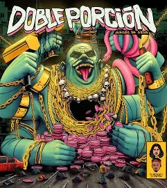

No sabias de nosotros, ¡AQUÍ ESTAMOS!.. DOBLE PORCIÓN, MBZ, LA BOMBA DE ZIROSHIMA, me sabe amargo, son vueltas a la Manzana…
(Mañas Ru fino) Acá jugamos al ladrón y el policía, si no te dieron no es mi culpa no tenían. Soy el vicioso que hace años no querían, y ya me vieron atrapado esperando la luz del día. Amanecemos en moteles luego de cócteles, contales que soy el Tuli y traigo tales. Que no se igualen, que no hay igual, perdón mamá si te hice trasnochar. Que no trabajes, soy un mal hijo ¡Hijo del rap! porque mi papá no dijo. Que lo que hago es por gonzaga y por lola, pa que amanezcas de vacaciones en Barcelona. Sin diploma en el estudio voy a rapear hasta que me sangren los labios. Estoy con estos, los quiero a ambos, no nos conocias no preguntes cuando. Los años pasan y con ellos las novias, los temas quedan y se van las modas. La noche es larga si me queda droga, me importa un culo si estoy con mis brother’s.
(Zof Ziro) Por una p*** no perdí las orejas como van Gogh, cuando rimo se para chango. Tengo el sogo sorongo hasta que de el mango, soy un hongo con un bongó y letras de Arango. En cuatros paredes, acá se complico el juego como (..?) conoció a leder como (..?) Por el mismo motivo no dudan, si beber que si olvido mi tierra si hablo en ingles never. Ahora es cuando el resto de lo que hay que hacer pierde sentido. Como la vida al ver que el más bueno es el más salado, esto gusta pero no que le guste a sus mujeres. Un hola es todo lo que hay que decirle algunas, relaciones que duran lo que un par de polas. No existen las horas en un pequeño motel, puse la cita, ya pague que venga la gula. Es madurar no querer madrugar porque me obligan, qué es libertad si haces lo que te digan. Que solo quiero llenar mi barriga, que esas que parecen pagadas solo son amigas…
(Métricas frías) Me gusta la chamaneria, obscuridad , traigo la noche a plena luz del día. Soy un te quiero a lejanía, wua hoy las ganas de matar son mías. Quiero un verano en New York y una parcela en la Alejandría. Quiero llevar al exterior a la vieja mía, con las cuentas pagas hoteles y sangrías. Es como quiero vivir, horas vagas tirado en la playa, es como quiero vivir. Drogas malas me dañan y así no quiero seguir, aquí volamos sin alas y sé es honesto al mentir. Yo sigo en un quizás, vivo de prisa y mi boca huele a ceniza. No paro ni a pensar, solo me trabo y ya, mis tormentas son tus delicias. Yo sigo en un quizás, vivo de prisa y mi boca huele a ceniza. No paro ni a pensar, solo me trabo y ya, mis tormentas son tus delicias.
DOBLE Z, Mañas Ru fino, es DP, es DP, Métricas frías, son nuestros días… Tengo el sexto sentido escucho gente muerta, si me matan seré una leyenda. No me midas con tu vara no peleo con la cuchara, donde voy, San Pedro me cierra las puertas. Tengo el sexto sentido escucho gente muerta, si me matan seré una leyenda. No me midas con tu vara no peleo con la cuchara, donde voy, el Diablo me abre sus puertas…

Trrabajo realizado por:Camilo Castellanos y Marlon Ortega
11-05